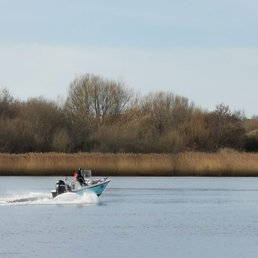

Full-screen image section 1 of 6.
Each section is exactly one viewport tall.
Scroll snapping keeps one image on screen at a time.
Designed for static hosting on GitHub Pages.
No Flask runtime required.

Static HTML + CSS replacement for the Flask route output.